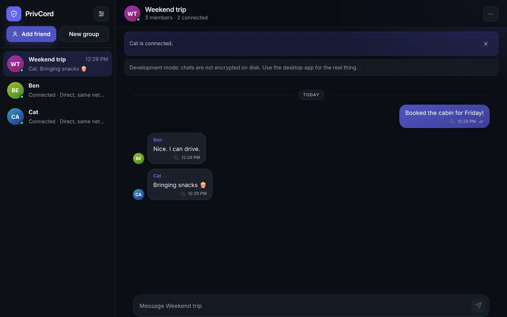
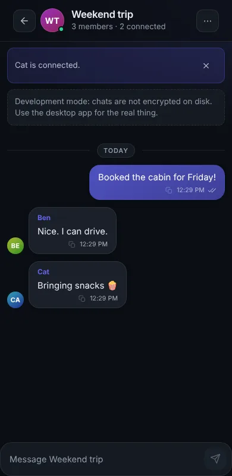

Chat privately. No number, no account, no server reading along.
PrivCord is a peer-to-peer messenger for Windows and Android. Chats go straight from your device to your friend's over an encrypted link, you add people with a QR code or six words, and it can keep going over Bluetooth with no internet.
Free, no sign-up. Source-available, and not yet independently audited.


- No phone number or email
- No account to create
- No company server stores your messages
- Post-quantum key exchange
- Rust engine
Everything a chat app needs, nothing that watches you
Built for people who want private conversations without handing over an identity.
Direct, end-to-end encrypted chats
Messages are encrypted on your device and go straight to your friend's over WebRTC. The handshake mixes ML-KEM-768 with P-256, so it is built to hold up against future quantum computers too. Optional relays only ever see sealed blobs.
Add a friend in seconds
Show a QR code or read out six words. No long strings to copy.
Groups of up to 10
Add Ben, Ben adds Cat, and you and Cat connect automatically.
One account, many devices
Link your phone and PC with a QR code. The account key never leaves your first device.
Files, photos, voice notes
Up to 8 MB, sent straight to the other device with no upload to anyone's server.
Keeps going with no internet Android, experimental
An optional Bluetooth mesh passes sealed messages through nearby phones, up to 7 hops. So far tested in simulation, not on real radios.
You hold the keys
A 12-word recovery phrase is your account. Lock the app with Windows Hello or your fingerprint, make passphrase-locked backups, and wipe everything in one tap.
Send later
Write now, schedule it for the time you pick.
16 themes
Midnight, AMOLED, Nord, Dracula, Blossom and more, on both apps.
Public channels
Join rooms like #general with no account. Messages are signed, but anyone who knows the name can read them.
Up and running in three steps
No sign-up form. Your identity is made on your device.
Install and write down 12 words
That recovery phrase is your account. It is never stored anywhere else, so keep it safe: the same words restore you on a new device.
Add a friend
Show your QR code or six words. They scan or type them, you tap Add. Both of you now have each other's keys pinned.
Chat
Messages go device to device. If your friend is offline, they wait and send when you reconnect.
How PrivCord compares
A short, good-faith summary. It can go out of date, so check each project for its current state.
| PrivCord | Signal | Session | Briar | |
|---|---|---|---|---|
| Phone number or email needed | No | Phone number | No | No |
| Messages go through company servers | No (device to device; optional relays see only sealed blobs) | Yes | Yes (a decentralized node network) | No (Tor, Wi-Fi or Bluetooth) |
| Works over Bluetooth with no internet | Yes (Android mesh, experimental) | No | No | Yes |
| One account on several devices | Yes | Yes | Limited | Limited |
| Independently audited | No, not yet | Yes | Yes | Yes |
PrivCord is a young project by one maintainer. If you need a battle-tested, audited messenger today, use one of the audited ones.
Questions people ask
Does PrivCord need a phone number, email or account?
No. Your identity is a 12-word recovery phrase that you hold. There is nothing to sign up for.
Is PrivCord end-to-end encrypted?
Yes. Messages are encrypted on your device and only the friend they are meant for can open them. Every link is authenticated against the keys you pinned when you added the friend, and the key exchange uses a post-quantum hybrid (ML-KEM-768 with P-256).
Is it really serverless?
Not completely, and it says so. To find a friend across the internet it uses optional signaling relays (public Nostr relays or your own), STUN, and on strict networks TURN. None of them can read your messages, though they can see connection metadata such as your IP address. You can run your own, or use none on a local network or over Bluetooth.
Can I use it without internet?
On Android, an optional Bluetooth mesh carries sealed messages through nearby phones, and linked devices on the same Wi-Fi sync directly. The mesh is experimental and has only been tested in simulation, not on real radios.
Which platforms are supported?
Windows and Android today. There is no iPhone, macOS or Linux app yet.
What if I lose my phone?
Remove the device from another device of yours: it takes effect in 24 hours (any device can cancel it), or at once with your recovery phrase. Then restore your account on a new device with the 12 words.
Is PrivCord open source?
The full source is public and free for personal, educational and research use. The PC-NC license does not allow commercial use without written permission, so it is source-available rather than OSI open source.
Has it been independently audited?
Not yet. The protocol is covered by tests, shared test vectors and fuzzing in CI, and the security policy is in the repository. Please read the known limitations before relying on it.
Is PrivCord a Signal, Session or Briar alternative?
It covers similar ground (private, encrypted chat) with a different design: no phone number, device-to-device links instead of a central server, and an offline Bluetooth mesh.
Get PrivCord
Free. Pick your platform.
Windows
Installer for Windows 10 and 11. The latest build is attached to the newest release.
Android
Install the arm64 APK (almost every phone); the armeabi-v7a one is for old 32-bit phones.
Heads up: the Windows installer is not code-signed yet, so Windows SmartScreen will warn you: choose More info, then Run anyway. On Android you need to allow installing apps from this source. Windows will also ask to allow the firewall the first time, which lets PrivCord find friends on your local network.